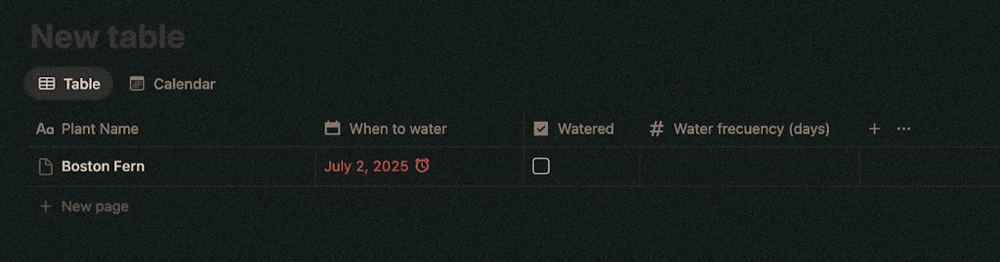
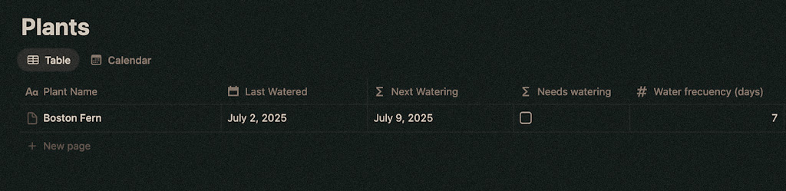
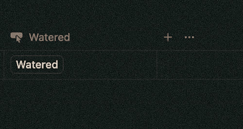
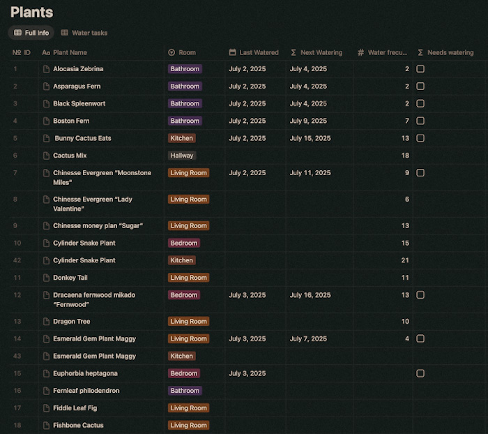
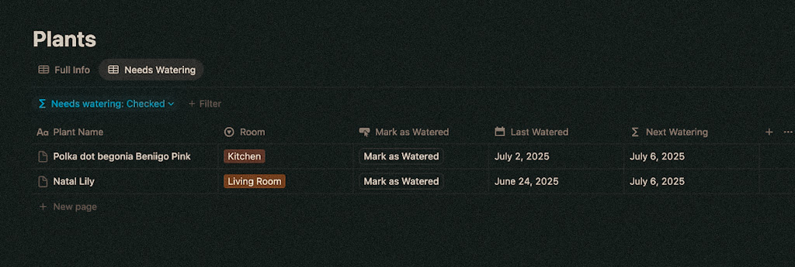
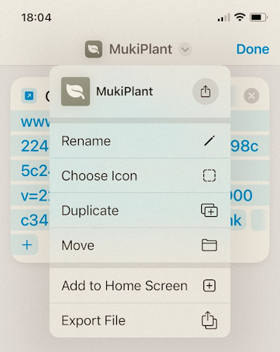

I wanted to start with the simplest, quickest version of what I needed to cancel my Plant care app subscription. Something I could build in one afternoon. (It took me a few more hours to add all my plants)
I chose Notion (Free Plan) because it's the no-code tool I'm most familiar with, and for future ideas, the linked databases make more sense than starting from scratch elsewhere.
Building the Core Database
For the foundation, I created the main database in Notion that will track all my plants core info as properties.
Step 1: Database Structure
To start, I focused on the minimum properties I needed to track a watering schedule:
- Plant Name type:text
- When to water type:date
- Water frequency type:number (fixed for now)
- Watered type:checkbox to mark the task as done and repeat the event
- Picture type:media It'd be nice but not necessary to track watering so I didn't include it for now.

Step 2: Knowing when to water
I originally planned to use When to Water as a date property with a recurring event using the water frequency, but Notion has limitations for setting this up with a free plan so I made these changes:
- Changed When to water to Last Watered. To register the last date I watered a plant.
- Added a new property Next Watering type:formula to calculatethe next watering date by adding the Water frequency number of days to the Last Watered date.
dateAdd(prop("Last Watered"), prop("Watering Frequency"), "days")
- Added a new property Needs Watering type:formula. It will show true (checkbox checked) if the difference
between Today and Last Watered is equal to or greater than the Water Frequency.
dateBetween(now(), Last Watered, "days") >= Water frecuency (days)
This is not mandatory for calculating Next Watering but it serves as a visual cue (checkbox by default for boolean) whether that plant needs to be watered and to create filters.

Step 3: Button to mark plant as watered
With these changes the tracker was working, but to make it simpler I added a new property called Watered type: button.
Clicking on the button runs an automation that updates Last Watered to today's date and generates a new Next Watering date.

A few small additions
🛋️ Room property
Because I have lots of cuttings from the same plants, I added a propertyRoom type:select with all the rooms in my house to help me identify which specific plant needs water.
I could have also added pictures or put the room in the plant name, but this was faster and gives me future flexibility for room-based filters and characteristics.

💧 Needs watering filter
I added a filter to create a Needs Watering view showing only plants that need watering. In this view I also hide some properties that were not relevant for me when watering my plants to have a better focused view. When I water a plant, it disappears from the list. (I might update this to keep it visible briefly in case I accidentally click it.)

📱Shortcut for mobile
I used Shortcuts to create a direct access to the Needs Watering view.
I
customized the icon and Add it to the Home Screen in my phone.

It was very hard not to start adding features that would be "nice to have."
But for V1, this is it!
What's Next
Future ideas (lower priority):
Check v1.0 in Notion → You can duplicate it and use it as your starting point.